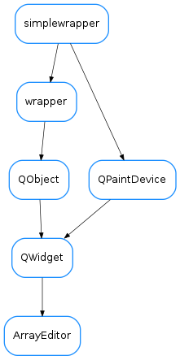

ArrayEditor¶

-
class
ArrayEditor(parent=None)[source]¶ Bases:
PyQt4.QtGui.QWidget-
getCorrected()[source]¶ returns x,c where x and c are numpy arrays representing the abcissas and ordinates for the corrected curve, respectively
-
getCorrection()[source]¶ returns xp,cp where xp and cp are numpy arrays representing the abcissas and ordinates for the correction points, respectively
-
getMaster()[source]¶ returns x,m where x and m are numpy arrays representing the abcissas and ordinates for the master, respectively
-
loadUi(filename=None, path=None)¶
-
onCorrSBChanged(value=None)[source]¶ recalculates the position and value of the control points (self.xp and self.corrp) as well as the correction curve (self.corr)
-